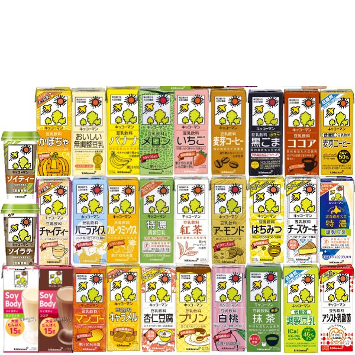
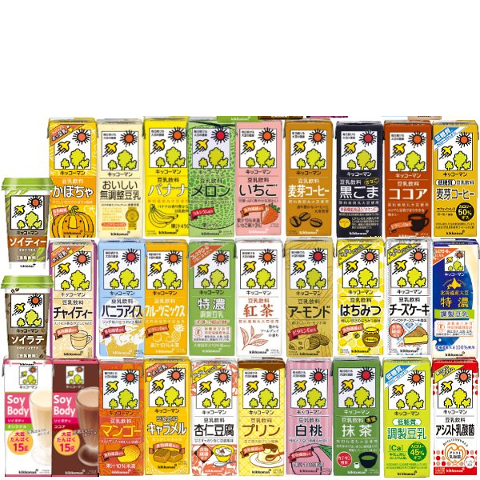

豆乳の6つの効果
ダイエット
豆乳には血液中の余分な脂質を流してくれるサポニンが含まれているため肥満防止の効果があります。 また、痩せやすい体を作るたんぱく質も豊富です。動物性のたんぱく質に比べ、低カロリーで基礎代謝を高くするはたらきがありますにより体内の不むくみを取る働きが期待できます。

便秘対策
豆乳には乳酸菌のエサとなるオリゴ糖が含まれていて、ビフィズス菌や乳酸菌の栄養源となり腸内の乳酸菌や善玉菌を増やすはたらきがあります。菌が増えると腸壁が刺激され、腸内環境が整うことで便秘が解消されます。

アンチエイジング
サポニンはダイエットのサポートになるだけでなく、抗酸化作用のはたらきもあります。動脈硬化や体の酸化、つまり老化を予防してくれるのです。また、ビタミンEの抗酸化作用で肌や髪のハリやツヤを保ってくれます。肌や髪のアンチエイジング効果があります。

女性ホルモンの支え
イソフラボンやさまざまな栄養素によって育毛環境を整えてくれる働きがあります。また、サポニンは血流の流れを改善し髪へ栄養が行き渡りやすくする働きがあります。さらにビタミンEに抗酸化作用があり、肌や髪のハリやツヤを保ってくれると言割れています。

美肌
豆乳には肌の健康を保つためのビタミンB1、B2、B6がたっぷり含まれています。また、レシチンには細胞の働きを正常に保ち新陳代謝を活発にさせ、肌のターンオーバーを正常にする作用があります。さらに、サポニンで肌の老化の原因の活性酸素を抑えて紫外線や乾燥など様々なダメージからお肌を守り、シミやそばかすの予防が できます。

抜け毛予防
イソフラボンやさまざまな栄養素によって育毛環境を整えてくれる働きがあります。また、サポニンは血流の流れを改善し髪へ栄養が行き渡りやすくする働きがあります。さらにビタミンEに抗酸化作用があり、肌や髪のハリやツヤを保ってくれると言割れています。

 
